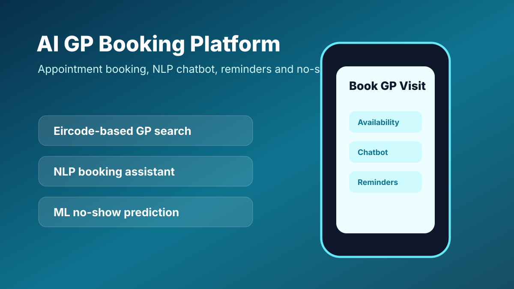

AI GP Booking Platform Concept
Designed an AI-enabled healthcare appointment booking concept for Ireland, covering GP search, appointment scheduling, NLP chatbot support, reminders and predictive no-show analysis.

Chatbot support for booking and common patient queries.
Location-based GP and clinic discovery concept.
No-show prediction and reminder-based appointment support.
Problem
Patients often face friction when finding suitable GP appointments, checking availability, rescheduling visits and receiving reminders. Clinics also lose time and capacity due to no-shows and manual coordination.
Solution Design
- Patient-facing mobile/web interface for GP search and booking.
- Real-time appointment availability and cancellation/rescheduling flow.
- NLP chatbot to help users navigate booking and support queries.
- Eircode-based location filtering for nearby clinics.
- Notification reminders to reduce missed appointments.
- Machine learning component to estimate no-show risk.
Proposed Architecture
Value
The concept connects AI, automation and appointment scheduling to improve healthcare access. It demonstrates how business AI can be applied to service design, patient communication and operational efficiency.